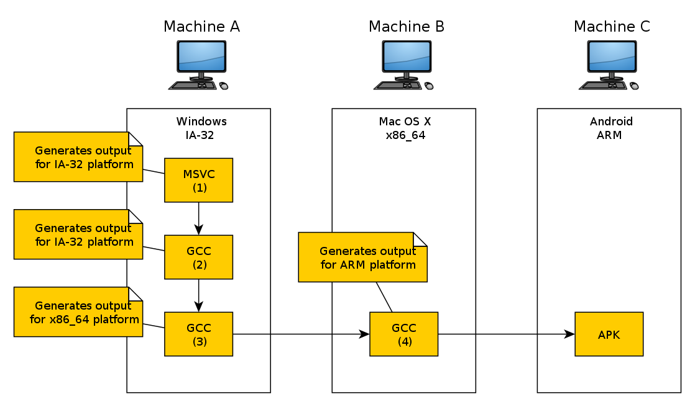

Кросс-компилятор
Кросс-компилятор — такой компилятор, который генерирует двоичные файлы для платформы, отличной от той, на которой этот компилятор запускается. Он может быть полезен, например, когда нужно скомпилировать программу для той платформы, экземпляров которой в данный момент в наличии нет, либо когда сборка непосредственно на этой (целевой) платформе невозможна или нецелесообразна, например, когда нужно собрать программу для маломощного встраиваемого ARM-компьютера, сборка программы непосредственно на котором будет происходить либо очень долго, либо не происходить вообще ввиду ограниченной производительности такого компьютера.
- Хост (host) — компьютер, на котором производится сборка;
- Цель (target) — компьютер, для которого производится сборка.
Строение кросс-компилятора
Помимо самого кросс-компилятора требуются скомпилированные для целевой платформы пакет binutils (особенно важно наличие GNU Assembler), содержащий программы для работы с объектными файлами, стандартная библиотека языка С (в LFA используется библиотека Musl) и заголовки ядра Linux.
Канадский крест
Канадский крест — это метод сборки кросс-компилятора для целевых архитектур. Например:
- Фирменный родной компилятор для компьютера (№1) используется для сборки «родного» компилятора для компьютера (№2).
- Родной компилятор для компьютера (№2) используется для сборки кросс-компилятора с компьютера A на компьютер B (№3).
- Кросс-компилятор с компьютера A для компьютера B используется для сборки кросс-компилятора для компьютера C (№4).

Смотрите также: